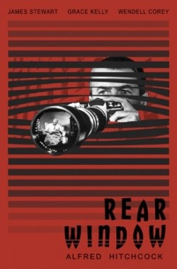

La Ventana Indiscreta
1954
A
Un fotógrafo, sentado en una silla de ruedas y con una pierna enyesada, espía a los vecinos y es testigo de un asesinato.
Un fotógrafo, sentado en una silla de ruedas y con una pierna enyesada, espía a los vecinos y es testigo de un asesinato.
En Marruecos, el dueño de un café ayuda a su ex novia y a su marido a escapar de los nazis.
Un criminal en la Inglaterra del futuro pasa una serie de procesos experimentales para corregir sus impulsos violentos.
Una adaptación ganadora del Premio de la Academia, de la novela de Mario Puzo acerca de la familia Corleone.
La serie sigue las aventuras del alien, llamado Alf, en su nuevo hogar en la Tierra
El joven James T. Kirk, Spock y el resto de la tripulación del Enterprise se embarcan en un curso de colisión con un romulano vengativo.
Un agente secreto que escapa de las situaciones más peligrosas con su ingenio.
Narra las andanzas de un grupo de cuatro soldados desertores de la guerra de Vietnam, que trabajan como mercenarios, siempre por causas justas.